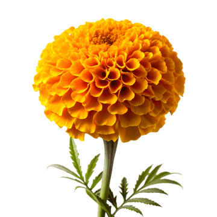
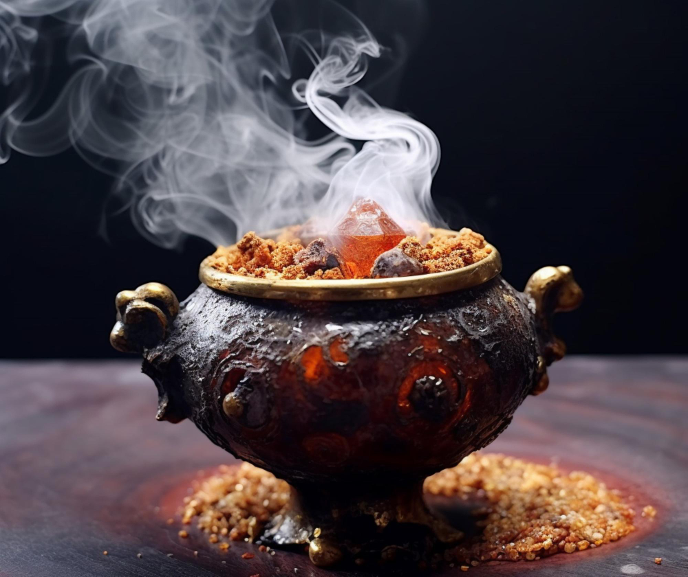
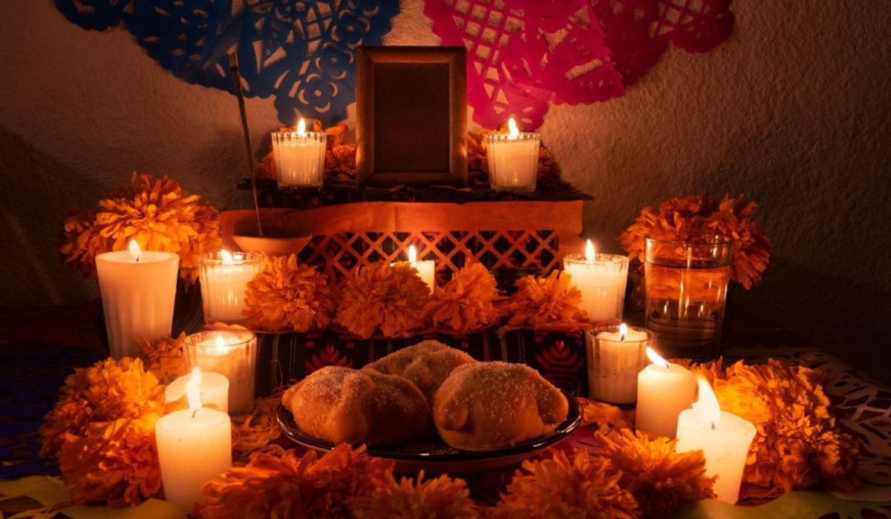
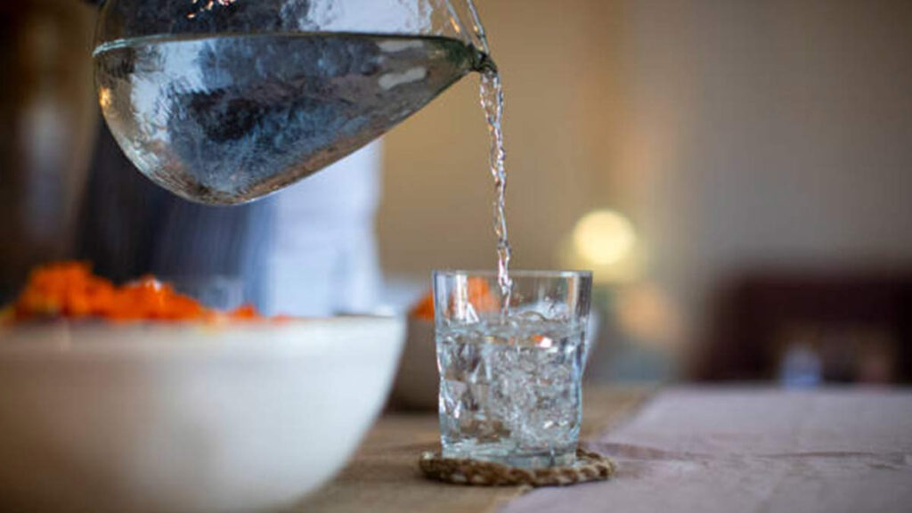
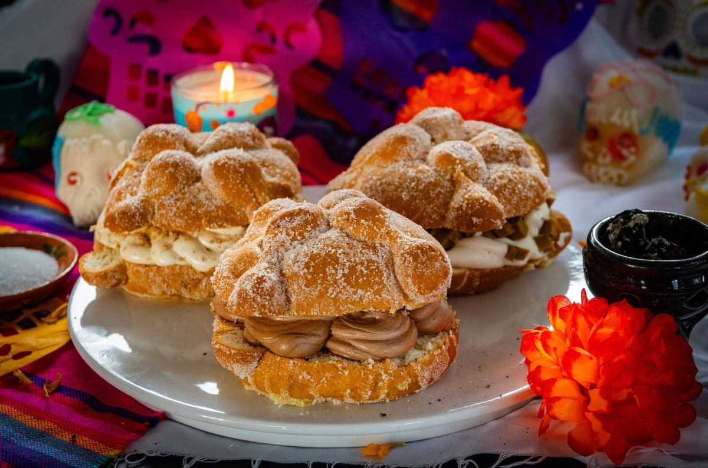
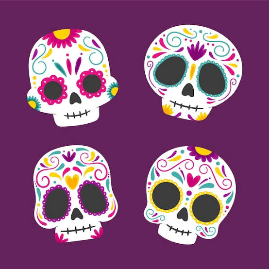

El Corazón del Día de los Muertos
Cada altar es un puente entre dos mundos. Conoce el significado profundo de los elementos que guían a las almas de regreso a casa.

Flor de Cempasúchil
Su color vibrante que asimila al sol y su aroma intenso sirven para trazar el camino que las almas deben seguir para llegar a la ofrenda sin perderse.

El Copal e Incienso
Se utiliza para limpiar el lugar de los malos espíritus. Su aroma purifica el ambiente para que el alma pueda entrar a su antigua casa sin ningún peligro.

El Brillo de las Velas
Representan la luz, la fe y la esperanza. Su llama parpadeante es la guía principal que ilumina el trayecto de los difuntos hacia nuestro mundo.

Agua y Sal
El agua mitiga la sed del espíritu tras su largo viaje. La sal es el elemento de purificación, ayuda a que el cuerpo no se corrompa en su viaje de ida y vuelta.

Banquete y Pan de Muerto
Se preparan los platillos favoritos del difunto para deleitarlo. El pan de muerto representa el ciclo de la vida y la muerte, adornado con formas de huesos.

Retratos y Recuerdos
Es el elemento central de la ofrenda. Nos recuerda a quién está dedicado el altar y asegura que su memoria siga viva entre nosotros.